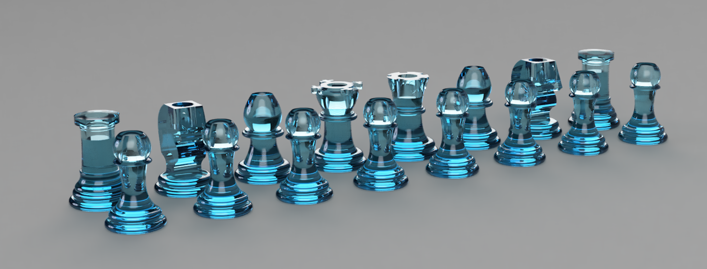

Project Overview
The purpose of this project was to a linear motion system with 2.5 degrees of freedom, meaning movement in the x, y, and z planes. The project also required the use of a unique end effector. We accomplished this through the use of linear stages with NEMA-17 motors that would allow for motion. By creating multiple linear stages we were able to create motion in multiple planes. The design for our linear stage can be seen below.
Each linear stage had a carriage that could be moved through the motor and belt. The carriage was designed so that another linear stage could be held. We also had to create CAD designed to hold the motor and the cap on the other side.
Project Gallery
Since every chessboard needs pieces we choose to design our own pieces in CAD and 3D print them, allowing use to inlay steel in the top so that the magnet would pick them up. Each piece was made the same height of 30mm for convenience. We machined down a steel bar and cut it to length to fit the chess pieces. The board was laster cut and engraved from acrylic using a simple png image. The board was made from acrllyic and laser engraved.


To move the motors together and turn the magnet on and off at the correct times we used a MATLAB script with g-code commands sent to the board. Since the chess board was roughly 8x8 30mm squares we were able to calculate the position needed by inputing some coordinate on the chess board (such as E4) by ensuring to zero the motor and doing some simple calculations. Then it was just a matter of moving the motor up and down, with the electromagnet being supplied voltage at the bottom. If a piece was being taken, then the system would move it to the end of the board and drop it off. If a piece needed to be moved to another square, then the user can input the current position and the new position and it will move to that location.


With the pieces and the movement system done, all that was left was to play a game of chess!